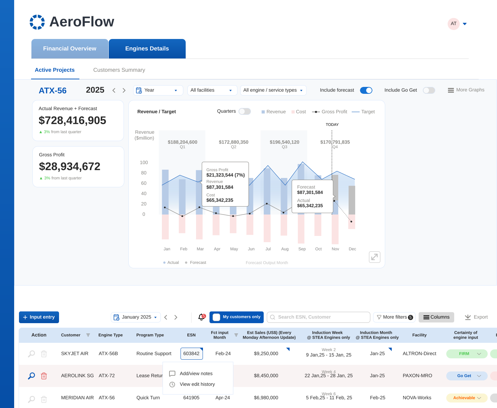
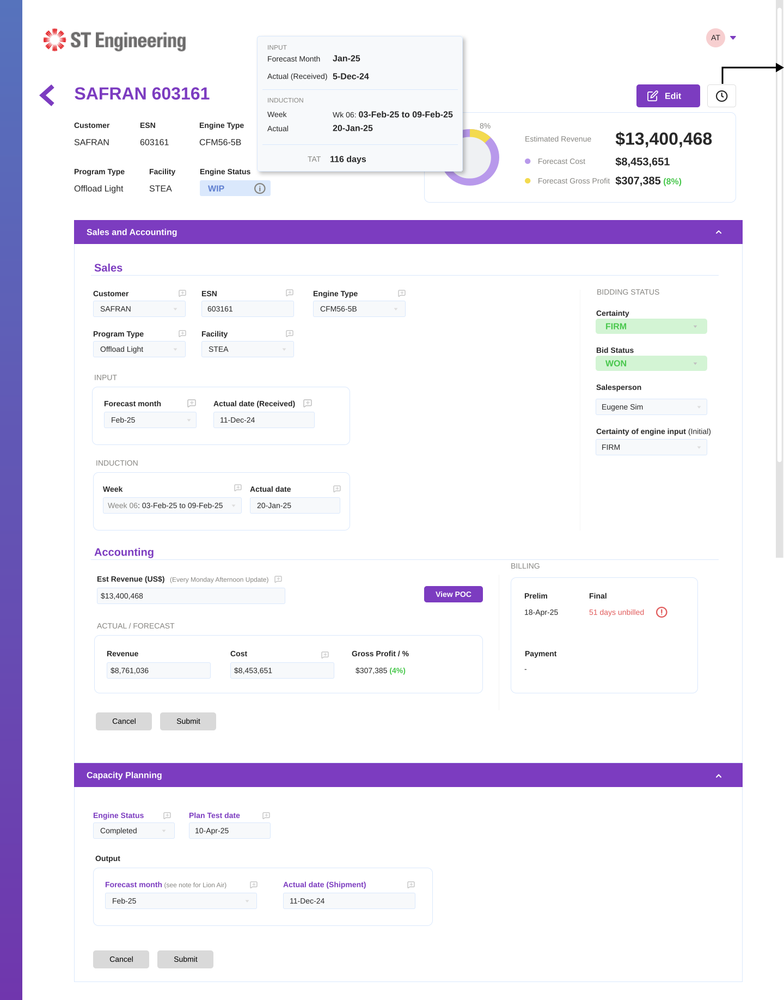
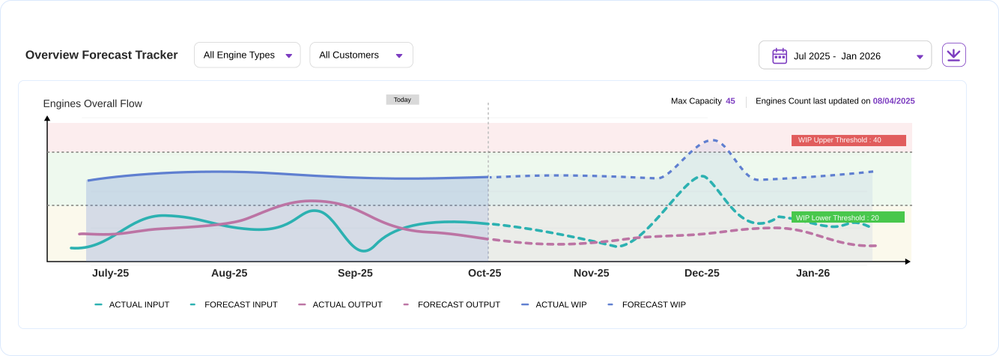

AEROSPACE · SALES · ENTERPRISE
One Workspace for Three Different Jobs
Confidentiality note: In line with applicable NDAs, all company names, client identities, proprietary part numbers, and live commercial data have been anonymized or generalized. The underlying workflow design, information architecture, and product thinking presented here are unaltered and authentic.

Sales Director · HOD
Key Account Manager
Sales Support · Operations
UX rationale — a one-size-fits-all dashboard satisfies no one here. Executives need fast, scannable summaries; account managers only need their own portfolio; data entry operators need every chart removed so rows stay visible.
UX rationale — the old file had no reliable way to trace who changed a forecast or when. Structured tracking per ESN means the data can be trusted during a review, not just referenced.

UX rationale — shopfloor throughput matters to sales planning, but it isn't the core job of this workspace. Treating it as light, optional context — rather than a primary feature — keeps the focus on the pipeline itself.

| Operational Area | Before | After |
|---|---|---|
| Interface | One cluttered file with hidden tabs, shared across every role | Role-tailored dashboard: strategic view for leadership, dense grid for data entry |
| Data Visibility | Fragmented across emails and shared files | Centralized pipeline tracking with live filtering |
| Sales Meetings | Hours spent building pivot tables | Sticky filters by Year, Month, Status & Account |
| Audit & History | Fragile formulas, no traceability | Structured tracking with an immutable edit log per ESN |